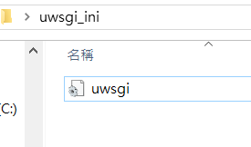

Ubuntu環境配置 <<
Previous Next >> Fossil SCM
環境準備
可以按下面的步驟自行配置或是下載已經配置好的虛擬機vmdk壓縮檔
- 安裝最新版的 Virtualbox
- 建立 Ubuntu 18.04 虛擬主機
- 以網路卡橋接啟動 Ubuntu 伺服器
- 使用以下指令來安裝所需要的軟體
- sudo apt install nginx
- sudo apt install uwsgi
- sudo apt install python3-pip
- sudo apt install uwsgi uwsgi-plugin-python3
- sudo apt install ssh
- sudo apt install git
- sudo pip3 install flask bs4 lxml
- sudo pip3 install uwsgi
Fossil由於這樣安裝的版本會較舊 所以另有分頁說明安裝方法
接下來需要修改一些設定
Ubuntu 18.04 /etc/netplan/50-cloud-init.yaml
這邊的網路設定僅供參考 須依所在的網路環境進行調整
# This file is generated from information provided by
# the datasource. Changes to it will not persist across an instance.
# To disable cloud-init's network configuration capabilities, write a file
# /etc/cloud/cloud.cfg.d/99-disable-network-config.cfg with the following:
# network: {config: disabled}
network:
ethernets:
enp0s3:
dhcp4: true
dhcp6: false
#addresses:
#- 192.168.1.13/24
#- 2001:288:6004::1/64
gateway4: 192.168.1.1
#gateway6: 2001:288:6004::254
nameservers:
addresses:
- 168.95.1.1
- 8.8.8.8
- 140.130.1.2
- 2001:288:6004:1::2
- 2001:b000:168::1
version: 2
/etc/nginx/sites-available/default
以下路徑的部分請依實際狀況做更改 這是為了讓nginx知道要伺服哪個路徑
server {
listen 80;
listen [::]:80;
root /home/server-50733143/repository/2019wcmj;
index index.html;
location /static {
alias /home/server-50733143/repository/2019wcmj/static/;
}
location /downloads {
alias /home/server-50733143/repository/2019wcmj/downloads/;
}
location /images {
alias /home/server-50733143/repository/2019wcmj/images/;
}
location / {
try_files $uri $uri/ =404;
}
location /blog {
alias /home/server-50733143/repository/2019wcmj/blog/;
}
location /reveal {
alias /home/server-50733143/repository/2019wcmj/reveal/;
}
}
server {
listen 443 ssl;
#listen [::]:443 ssl ipv6only=on;
location /static {
alias /home/server-50733143/repository/2019wcmj/static/;
}
location / {
include uwsgi_params;
uwsgi_pass 127.0.0.1:8080;
}
#server_name ipv4_ip;
#ssl on;
ssl_certificate /etc/stunnel/localhost.crt;
ssl_certificate_key /etc/stunnel/localhost.key;
ssl_session_timeout 5m;
ssl_protocols SSLv3 TLSv1 TLSv1.1 TLSv1.2;
ssl_ciphers "HIGH:!aNULL:!MD5 or HIGH:!aNULL:!MD5:!3DES";
ssl_prefer_server_ciphers on;
try_files $uri $uri/ =404;
}
再來請創建一個資料夾及ini檔 一起放在/home/使用者名稱/
這個目錄下即可

uwsgi.ini
路徑與ID的部分一樣請依實際狀況做更改
[uwsgi]
socket = 127.0.0.1:8080
uid = server-50733143
gid = server-50733143
plugins-dir = /usr/lib/uwsgi/plugins/
plugin = python3
master = true
logto = /var/log/uwsgi/emperor.log
logfile-chown = server-50733143:server-50733143
processes = 4
threads = 2
chdir = /home/server-50733143/repository/2019wcmj
wsgi-file = /home/server-50733143/repository/2019wcmj/wsgi.py
再來創建一個cmsimfly.service檔 這個則放在/etc/systemd/system 這個目錄下
cmsimfly.service
路徑與ID一樣請依情況更改 這個檔案是要讓CMSimfly能隨開機啟動
[Unit]
Description=uWSGI to serve CMSimfly
After=network.target
[Service]
User=server-50733143
Group=server-50733143
WorkingDirectory=/home/server-50733143/uwsgi_ini
ExecStart=/usr/local/bin/uwsgi --emperor /home/server-50733143/uwsgi_ini
[Install]
WantedBy=multi-user.target
CMSimfly與自己的倉儲可以在Ubuntu中直接下指令clone
或是使用FileZilla送進去也可以 只是礙於權限問題只能送到/home/使用者名稱/
這個目錄下 要送到其他地方只能先送到這個目錄再來使用sudo cp 檔案名稱 路徑
才能將檔案複製過去 又或是直接在Ubuntu下使用vi 直接編輯但這樣速度太慢
建議在windows下編輯完後使用FileZilla送入home再來使用cp覆蓋
還有新版的CMSimfly init.py中的設定為 uwsgi = True 這是for Ubuntu
若要在windows環境下使用須改為False
檔案都配置好後就可以下指令啟用了
/etc/netplan/50-cloud-init.yaml 配置好後使用 sudo netplan try
若沒有提示錯誤就可以按Enter套用
sudo /usr/bin/uwsgi --emperor /home/kmol2019/uwsgi_ini
這是用來啟動uwsgi 啟動剛剛創建的uwsgi.ini
接著將 cmsimfly 服務設為隨系統開機啟動:
sudo systemctl enable cmsimfly
取消的話則改成disable即可取消
手動啟動 cmsimfly.service 服務
sudo systemctl start cmsimfly
停止則改為stop即可
Ubuntu環境配置 <<
Previous Next >> Fossil SCM